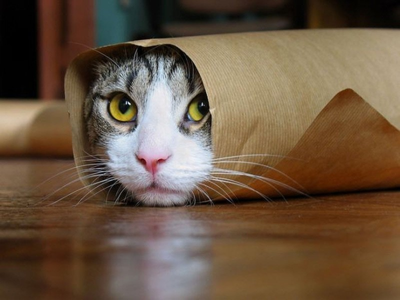

Caracteristicas
Características de los gatos: Un análisis exhaustivo
Los gatos, también conocidos como Felis catus, son mamíferos carnívoros domesticados que han cautivado a los humanos durante miles de años. Son conocidos por su independencia, inteligencia, comportamiento juguetón y afecto hacia sus dueños. A continuación, se presenta una descripción extensa de sus características más destacadas:

Anatomía y fisiología:
- Huesos y músculos: Los gatos tienen 230 huesos, mientras que los humanos tenemos 206. Esto les da una gran flexibilidad y agilidad, permitiéndoles saltar hasta 3 metros de altura y realizar movimientos acrobáticos con facilidad. Sus músculos están perfectamente desarrollados para la caza y el escape, lo que les permite correr, trepar y nadar con gran destreza.
- Visión: Los ojos de los gatos están especialmente adaptados para la visión nocturna. Poseen una capa reflectante llamada "tapetum lucidum" que les permite ver en la oscuridad hasta seis veces mejor que los humanos. Además, su campo de visión es de casi 200 grados, mucho más amplio que el nuestro, lo que les permite detectar presas y amenazas desde ángulos diferentes.
- Oído: Sus orejas pueden rotar 180 grados, lo que les permite captar sonidos desde todas las direcciones. También tienen una audición mucho más sensible que la nuestra, y pueden detectar sonidos de alta frecuencia que nosotros no podemos escuchar. Esta capacidad auditiva les resulta crucial para la caza y la comunicación.
- Lengua: La lengua de los gatos tiene una textura áspera con pequeñas púas llamadas papilas, que les ayudan a acicalarse y a raspar la carne de los huesos. Las papilas también tienen propiedades antibacterianas que les ayudan a mantener su pelaje limpio y libre de parásitos.
- Bigotes: Los bigotes son pelos sensoriales que les ayudan a navegar en la oscuridad y a medir distancias. Son especialmente importantes para los gatos que viven en interiores o que tienen problemas de visión.
Comportamiento y hábitos:
Patrones de sueño: Los gatos pasan entre 12 y 16 horas al día durmiendo. Duermen tanto para conservar energía como para procesar información sensorial. Suelen dormir en siestas cortas durante el día y tener periodos de actividad más largos por la noche, ya que son animales crepusculares.
Aseo: Dedican alrededor del 15% de su día acicalándose. Esto les ayuda a mantener su pelaje limpio, libre de parásitos y a regular su temperatura corporal. Su lengua áspera y flexible, junto con sus patas delanteras, les permite realizar un acicalamiento meticuloso.
Comunicación: Los gatos se comunican entre sí y con los humanos mediante una variedad de vocalizaciones, lenguaje corporal y marcas olfativas. Además del típico "miau", pueden emitir hasta 100 sonidos diferentes, cada uno con un significado específico. El lenguaje corporal también juega un papel importante en la comunicación felina, incluyendo la posición de la cola, las orejas y los ojos, así como la postura general del cuerpo. Las marcas olfativas, dejadas por las glándulas odoríferas que se encuentran en diferentes partes del cuerpo, les sirven para marcar su territorio y a los miembros de su grupo.
Caza: Son cazadores naturales y tienen un fuerte instinto de presa. Incluso los gatos domésticos que tienen comida a su disposición disfrutan de cazar pequeños animales. Este instinto se manifiesta en comportamientos como acechar, perseguir y abalanzarse sobre objetos en movimiento.
Independencia: Si bien algunos gatos pueden ser muy cariñosos, en general son criaturas independientes que disfrutan de su propia compañía. No son tan dependientes de la atención humana como los perros, y pueden pasar largos periodos de tiempo solos sin sentirse angustiados.
Aspectos sociales:
Socialización: Los gatos son animales sociales que forman fuertes lazos con sus madres y compañeros de camada. En la naturaleza, viven en grupos llamados colonias, donde cooperan para cazar, criar a sus crías y defenderse de los depredadores. Los gatos domésticos también pueden formar lazos sociales con otros gatos, perros e incluso humanos.
Jerarquía: En las colonias de gatos salvajes, existe una jerarquía social donde algunos gatos dominan a otros.